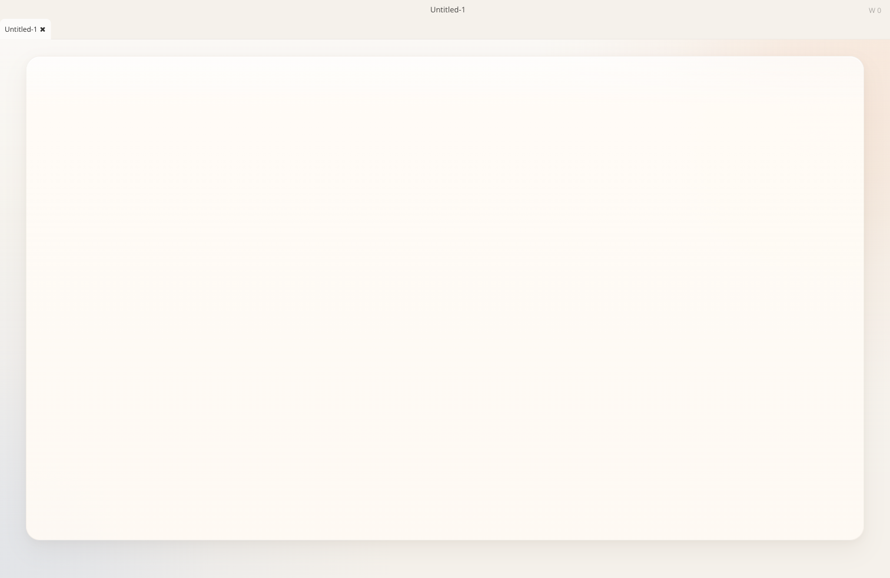
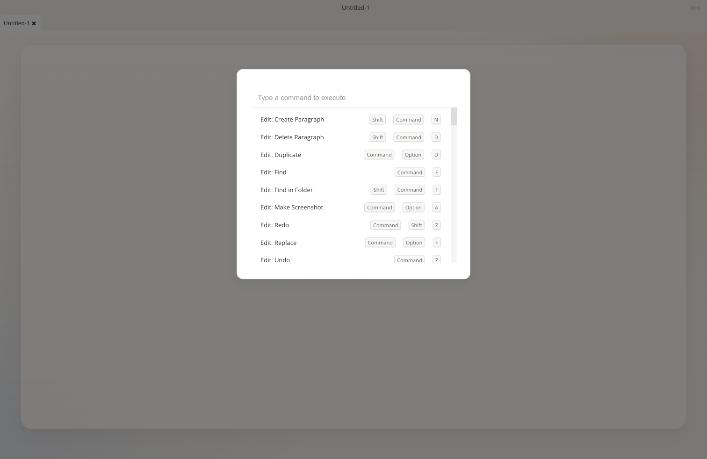
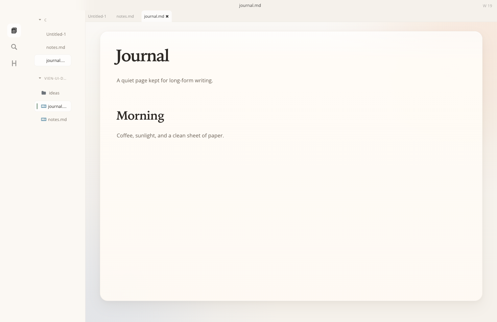
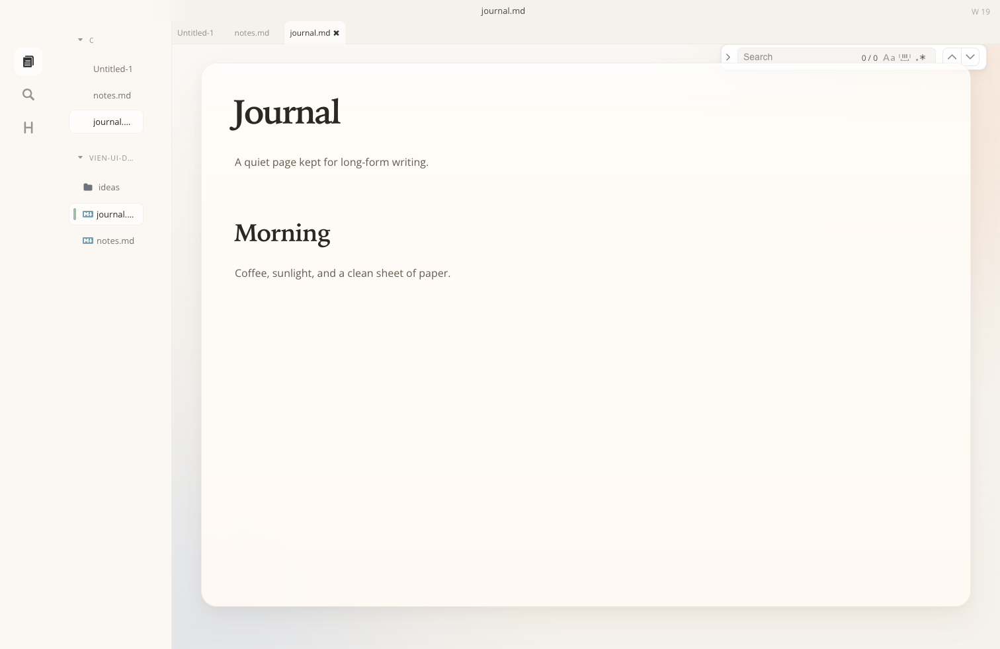
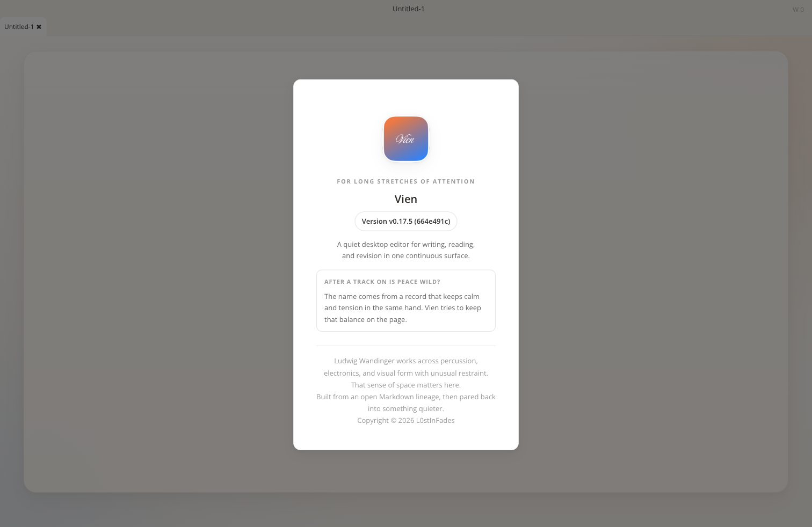
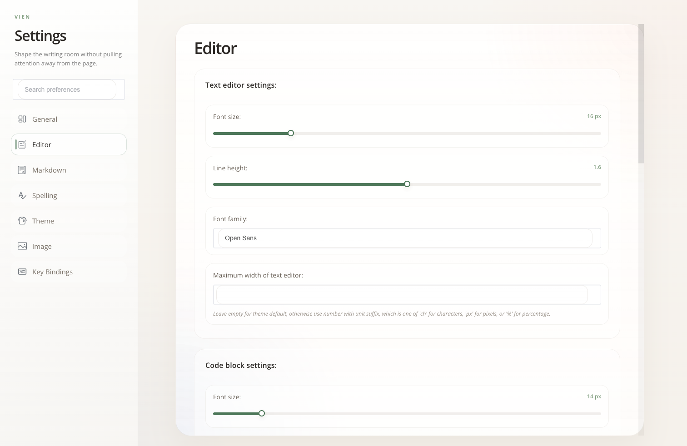

Editor / Blank Page
Warm paper baseline for the empty writing state, without the old dashboard layer.
1512 × 982Fresh screenshots captured from the packaged interaction paths. Use this page to spot spacing regressions, hierarchy drift, and visual collisions before shipping.

Warm paper baseline for the empty writing state, without the old dashboard layer.
1512 × 982
Overlay command surface: input hairline, quiet rows, muted shortcut chips.
1512 × 982
Working-window baseline: icon rail, file tree, tab strip, and title bar together.
1512 × 982
Floating search surface over the paper: quiet toggles and hairline input.
1512 × 982
Brand panel and release copy, useful for checking visual tone and spacing in overlays.
1512 × 982
Settings window baseline for density, control alignment, and navigation hierarchy.
1512 × 982Document rendering baseline for headings, code blocks, spacing, and line length.
1512 × 982Selection-state proof for the softer sage highlight used on the writing surface.
1512 × 982Inline formatting float on a text selection: unified radius, border, and shadow.
1512 × 982